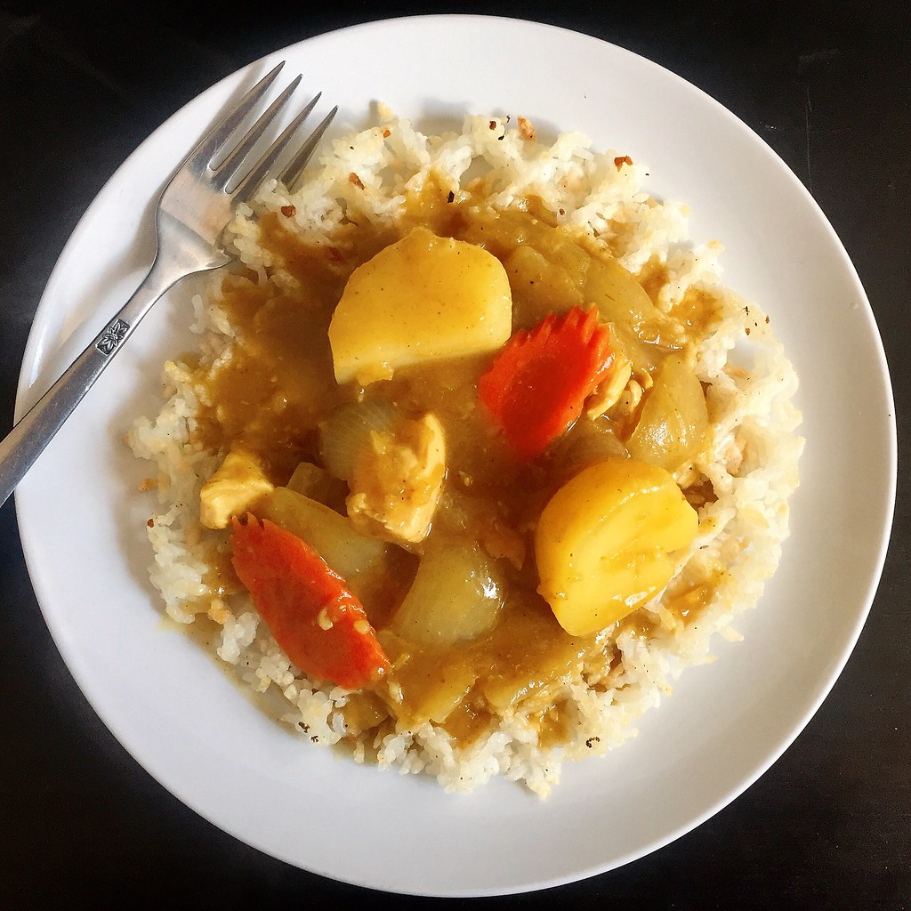
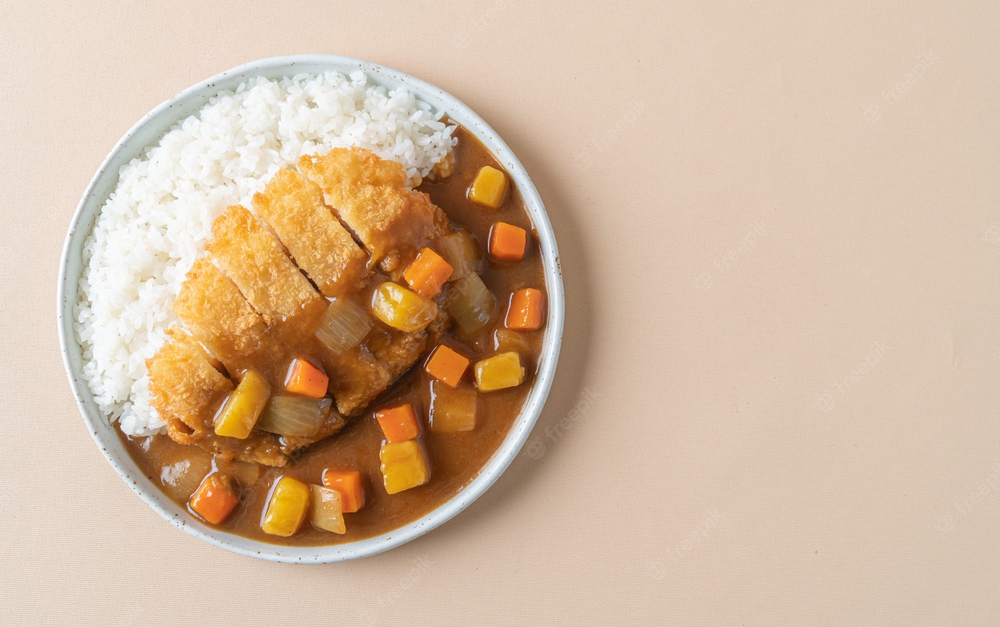
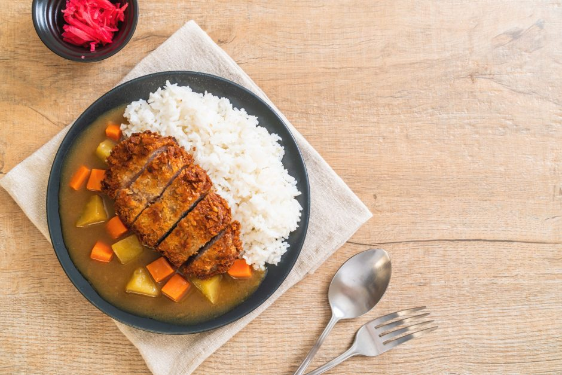

Chef Jeremy's Beginner's Guide to making the Best Japanese Curry Recipe

A delicious midweek supper recipe for Japanese chicken curry! This Japanese variation of curry is a must-have for any family supper since it features tender chunks of chicken, carrots, and potatoes cooked in a creamy, flavorful curry sauce.

What is Japanese Curry ?
Japanese curry often consists of a protein, sweet onions, carrots, and potatoes and has a thick, stew-like consistency. A roux thickens the sauce (a mixture of fat and flour, and an addition of curry spices).

History of Japanese Curry
The British brought curry, which was originally Western-style stews spiced with curry powder, to Japan in the late 1800s. Soon after the Japanese modified curry to become their own form, "Curry Rice" (Kare Raisu, ) was created. By the 1950s, S&B Foods had created an easy-to-use instant mix in block form called curry roux that allowed anyone to quickly prepare curry rice at home.
Curry is now a common cuisine seen in restaurants and food courts of department stores and has become a staple in Japanese households. Even outside of Japan, several other Asian nations have adopted it due to its popularity.
What Makes Japanese Curry Different from Other Curries
Japanese curry differs significantly from most other curries in the globe in that it has a thicker consistency and a more sweet and savory flavor profile. Onions, carrots, and other ingredients like honey and apple shredded provide a special sweetness to the dish.
The sauce has layers of earthy tastes and spices, like a rich, thick demi-glace. Japanese curry is sometimes compared to a hearty stew rather than a traditional curry like Thai or Indian curry. Children can eat it because it is considerably less spicy.
8 Helpful Tips to Make Japanese Chicken Curry
Tip #1: Ingredients
- Chicken
- Onions
- Carrots
- Potatoes
Tip #2: Cook the onion till tender and golden
The nicely browned onions add a ton of flavor to the final curry. If you have an additional 5-10 minutes, caramelize the onion.
Tip #3: Cover the ingredients with just enough broth (or water)
When you add the broth/water, be sure the ingredients are covered with just enough water, and not submerged completely. As you simmer, the ingredients will release more moisture to the cooking liquid.
Tip #4: Do not forget to skim
Skimming is a very important step in Japanese cooking. We skim the scum and impurities to achieve a refined
taste.
Get a fine mesh skimmer and fill up the measuring cup with water. Skim the impurities and dunk the skimmer in the
water to clean. And repeat until the broth is clean.
Tip #5: Add 2 cubes of curry roux at a time
Make sure all the curry roux cubes are dissolved completely. You don’t want to end up biting into a chunk of
curry cube while eating!
Fill up a ladle with broth and add 2 cubes. Using a spoon or chopsticks, let the roux dissolve completely. Then
add 2 more cubes and repeat.
Tip #6: Watch out when simmering curry
Always watch the curry after you add the roux. The thick curry sauce gets burnt easily at the bottom of the pot.
Tip #7: Make a big batch and store
Japanese curry is ideal for freezing. I often cook up a big batch of leftovers and keep them in the refrigerator
for a few days or in the freezer for up to a month.
Oh, one more thing! Potatoes will change their
texture after freezing so remove the potatoes if you plan to freeze the curry.

© 2022 Jeremy's Cookbook